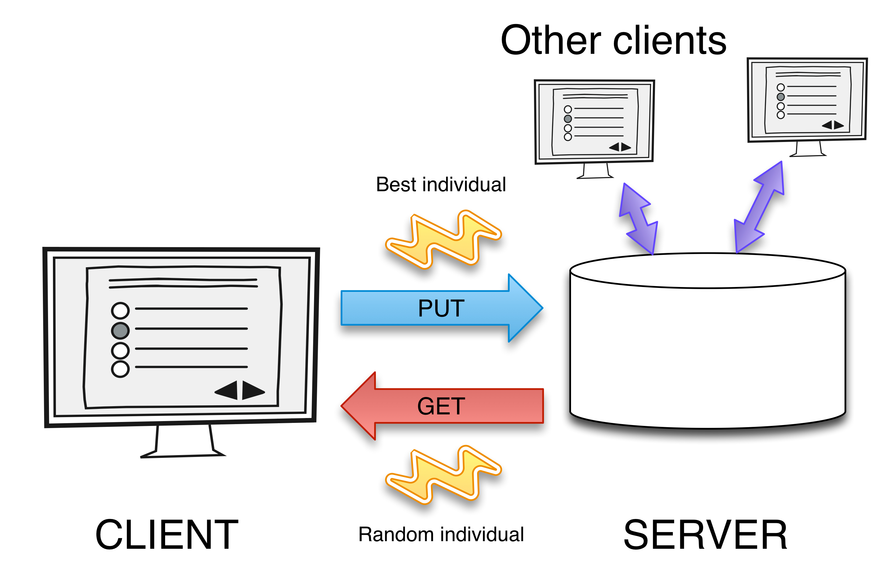

A performance assessment of evolutionary algorithms in volunteer computing environments:
the importance of entropy
Merelo, de las Cuevas, García-Sánchez, García-Valdez
Architecture of a volunteer system

Time-to-solution vs. entropy
Credits
Drip painting "23" by Leslie Hawley
Pat Steir's Waterfalls
by Thomas Hawk
Pollock painting by Thomas Hawk